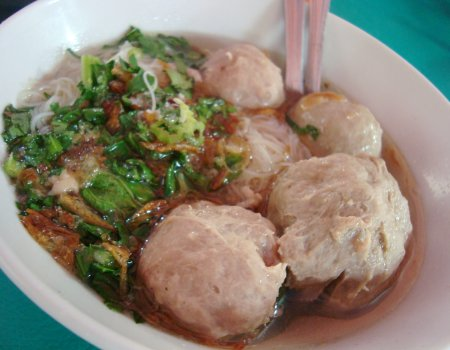
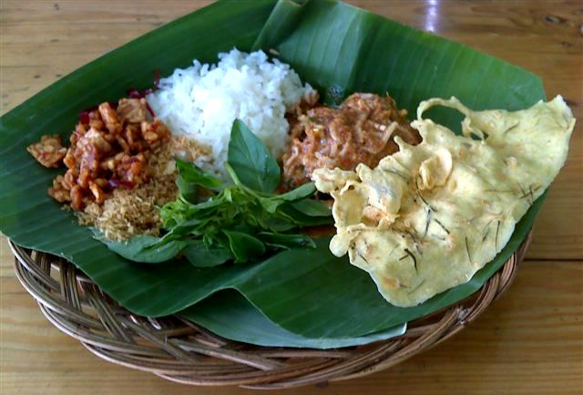

Sejarah Nama Gado Gado Direksi
Pertama, saya mau cerita soal asal usul nama dulu. Nama Gado Gado Direksi ini sangat kontras dengan kenyataan bentuk warung yang terlihat di depan mata. Nama ‘direksi’ yang mewah ternyata hanyalah sebuah lapak mepet tembok yang lebarnya tak mencapai 1 meter dengan panjang kira kira hanya 4 meter. 1×4 meter luas warung? yes, that’s right.
Lantas mengapa ‘direksi’? Ini yang memberi nama adalah para pelanggan sendiri. Biasa, warung warung jaman dahulu memang mayoritas tak memiliki nama. Sehingga ketika orang bertanya, “Yang mana sih?”, “Itu loh yang … (bla bla bla)”. Begitu pula dengan gado gado ini. Berangkat dari sebuah lapak tanpa nama, tak disangka gado gado ini menjadi kesukaan para direksi Bank Indonesia.
Daripada kesusahan memberi informasi lokasi gado gado, lantas para pelanggan spontan, “Itu loh gado gado kesukaannya para direksi BI”. Lama lama menyusut dan tinggal, “Itu loh gado gado direksi”. Sip, dan jadilah nama itu kini nempel di dinding sepetak warung biru ini. Gado gado Direksi.
Apa bedanya gado gado direksi dengan gado gado lainnya?
Dari tampilan sih sama. Sayur sayuran yang kemudian di siram dengan kuah kacang plus bonus krupuk udang dan emping. Namun, dari segi rasa, anda mesti membuktikan sendiri kelezatannya.
Bumbu kentalnya ini terasa begitu kuat di lidah. Harum kacang pilihan – nya bercampur sempurna dengan air asam, perasan jeruk limo, gula merah, garam dan cabai. Saya sebut kuat, karena gado gado ini memiliki after taste yang jarang dimiliki oleh gado gado lain. Lembut dan wangi.
Ketika saya tanya sama pemiliknya, Nyonya Giok Lie yang merupakan generasi ke dua penerus tahta direksi ini, jawabannya simpel, “Kelezatan bumbu-nya terletak dari ke-orisinil-an ulekan tangan dan penggunaan bahan baku yang segar”.
Hm, tak berlebihan. Pasalnya, uleg-an tangan dan blender atau mesin memang beda. Dengan di uleg manual, minyak kacang akan keluar dengan aroma manis khas kacang juga rasa yang lebih pulen. Apalagi dengan tambahan pengalaman sang peng-uleg yang sudah puluhan tahun lamanya. Dijamin semua takaran, pas.
Bahan baku sayur pun, mulai dari kacang panjang, toge sampe tahu yang saya makan, semuanya segar. “Saya selalu belanja pagi hari untuk 1 hari saja. Jadi saya nggak pernah nyimpan bahan buat besok. Semua selalu baru setiap hari”, cerita Ny. Giok Lie pada saya.
Dimana sih lokasinya?
Tempatnya memang bisa dibilang susah dicarinya. Tapi sebagai patokan saya dapat mengatakan, jika anda sudah sampai di Glodok, langsunglah bertanya pada tukang parkir, “Dimana Hotel Fortuna?”. Jika hotelnya sudah terlihat, segera parkir dan masuklah ke gang kecil disamping hotel tersebut. Melewati berbagai penjaja makanan, teruuus sampai ada pertigaan semacam foodcourt, nah gado gado direksi berada tak jauh dari foodcourt itu. Pokoknya kalau ingin ke sini pesan saya, “Malu bertanya, sesat di jalan”.
Alamat : Gado Gado Direksi. Jl. Pintu Besar Selatan II. Glodok – Kota. Jakarta Barat. Telp 021 925 31 495 / 0812 940 8926
Nasi Uduk
Nasi uduknya yang pulen wangi karena dimasak bersama daun salam dan serai. Pelengkapnya berupa bawang merah goreng, bihun, potongan mentimun, sambal merah, emping, dan kerupuk merah.
Pilih saja lauknya dari etalase kaca. Ada ayam goreng bumbu kuning, tempe dan tahu goreng, perkedel kentang, telur balado, serta semur jengkol.
Jl. Dr. Sitanala No. 4 (dekat RS Dr. Sitanala)
Tangerang
Jam buka: 17:00-23:00

Baso
Baso Sido Mandiri
Ada lima buah bao halus kecil (Rp. 12.000)yang tersaji dengan potongan caisim yang royalserta bawang goreng. Semangkok baso dihidangkan tanpa tetelan.
Setelah dibelah, bagian dalam basonya terlihat berwarna pink samar. Teksturnya lumayan empuk, rasanya cukup gurih. Kuahnya berwarna kekuningan dan terasa asin.
Baso Sido Mampir
Jl. Pejaten Raya no.24, Pasar Minggu
Jakarta Selatan
Soto Betawi
SOTO BETAWI PAK JAMHARI--
Anda penggemar soto betawi? Kalau ya dan kebetulan berada di sekitar kawasan Meruya atau Kebun Jeruk, Jakarta Barat, mampirlah ke Soto Kaki Sapi Betawi Pak Jamhari di Jalan Pengampuan, Nomor 2, Meruya Utara, Jakarta Barat. Semangkuk soto di sini harganya Rp 15.000.
Warung soto itu sudah ada sejak tahun 1975 dan tidak pernah putus melayani tamu. Pelanggannya berasal dari berbagai wilayah Jakata, bahkan dari Bekasi, Bogor, dan Tangerang. "Ini pelanggan saya dari Karawaci (Tangerang)," kata Muhaya (51), istri Jamhari, si pemilik warung, saat seorang ibu dan anaknya turun dari mobil lalu masuk ke warung pada akhir pekan lalu.
Sayang, tempat ini hanya buka dari pukul 10.00 sampai sekitar pukul 17.30. Hari Minggu dan libur nasional tutup. Meski ramai pengunjung, keluarga Jamhari tidak ingin memperpanjang waktu operasi. Jam makan siang, sekitar pukul 12.00-14.00, merupakan puncak keramaian. Lima meja panjang di dalam plus satu di teras warung pasti penuh. Namun, Anda bisa duduk di teras atau di lorong di samping warung. Kalau tidak mau bersesakan dan kegerahan, datanglah setelah jam makan siang. Oh ya, di sini tidak ada pendingin ruangan. Plafon tidak tinggi. Kalau pengunjung penuh dan matahari bersinar terik, pasti gerah.

Pecel
Pecel Pincuk Kalibata--
Gara-gara banyak denger slentingan ada tempat jual pecel pincul yang enak di seputaran Kalibata, saya makin penasaran untuk membuktikannya. Mencari tempatnya memang harus cermat, karena lokasi rumah makan ini ada di deretan tempat makan lain di seberang Taman Makam Pahlawan Kalibata. Saat sudah sampai, saya langsung ambil posisi yang pas. Pas di depan sederet makanan dan jajajan yang dihidangkan rumah makan ini. Di Pecel Pincuk Kalibata, semua makanan yang dijual sengaja di letakkan di bangku pembeli dan tidak "tersembunyi" di dapur. Tentu saja pemandangan ini membuat mata kelaparan.
Setelah menunggu antrian, nasi pecel dan botok teri pesanan saya sudah siap.Mantap sekaliiii!!! Bumbu pecelnya mak nyuss...dengan sedikit sensasi pedas yang bikin merem melek. Sayurannya terdiri dari daun pepaya, kacang panjang, juga tauge. Ditambah dengan nasi hangat dan botok teri, menjadikan makan siang saya terasa nikmat. Karena masih penasaran dengan menu-menu Jawa Timuran di sini, saya pun memesan yang lain. Karena kangen dengan lauk mendol (tempe yang dibuat seperti perkedel), sambal tumpang dan rawon, menu-menu itu saya request untuk dibawa pulang.
Tak percuma saya jauh-jauh ke Kalibata mencari pecel pincuk. Karena selain mencoba pecelnya, saya juga bisa menikmati menu-menu lain yang mengingatkan pada masakan dari kampung halaman. Untuk harga, dijamin tak membuat kantong kempes. Harganya mulai 7 ribu sampai 20 ribuan. Daripada makin penasaran, buruan yuk ke sana..! Pecel Pincuk Kalibata Jl Taman Pahlawan Kalibata
Kalibata, Jakarta Selatan
Siomay
Siomay Theresia--
Memang ya ngomongin food street tuh gak habis habis ceritanya apalagi food street nya zaman sekolah dulu jadi lebih seru terlebih ada bumbu nostalgia era sekolah dulu, ada yang masih bertahan ada juga yang sudah almarhum alias bangkrut akibat dipalakin anak sma dan yang paling seru masa sma , selain kita dah gak bawal bekal makanan kesekolah juga biasanya usia lagi bandel bandelnya, kok jadi ngalor ngidul kita kembali ke makanan aja, salah satu jaman gue sekolah makanan utama gue ya somay ini, bukanya doyan banget sih, tapi jajan di sekolah gue ini cuma somay, bakmi dan bakso jadi terpaksa dalam beberapa hari pasti ketemu lagi,
Somay disini seperti somay bandung, macamnya sih tidak banyak tahu, kol , kentang, somay, telor dan pare itu juga kadang kadang tidak komplit, somaynya lumayan enak masih cukup terasa daging ikan nya
Sebaiknya makan saat masih banyak akan lebih enak, begitu juga dengan bumbu kacangnya,
Terus terang kalau lagi laku si abang agak males ngelayaninya, gak ada limo lah somay somay yang udah babak belur karena ditaruh dibagian bawah juga masih dijual, dah pasti saya makanan lain.terakhir makan harganya 3500 perpotong rata.
Untuk kebersihan sih cukup bersih maklum dengan gerobak yang berada dipinggir jalan jadi maklum, somay ini berjualan terus termasuk sabtu minggu, juga sampai sore, kalau malam biasanya sudah habis apalagi pas bubaran misa gereja.